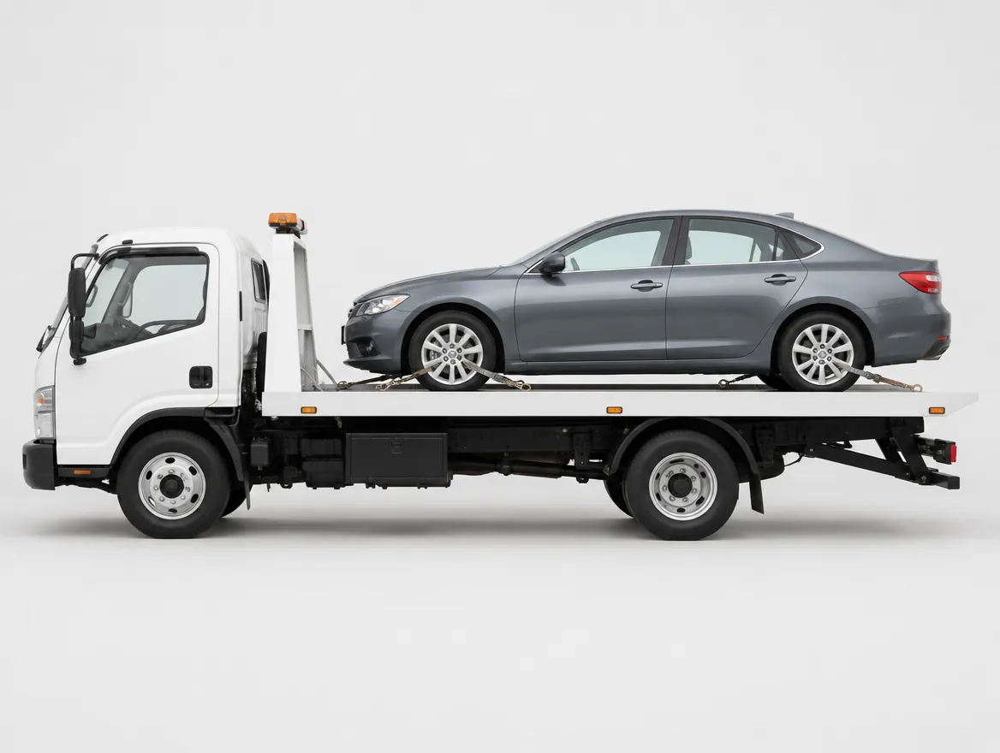

We tow cars, crossovers, small SUVs, and light pickups. Call us with your location and vehicle, and we send a truck to move it to our shop or the address you choose.
Questions about Light Duty Towing
What counts as light duty?
Passenger cars, crossovers, and small trucks.
Where will you tow my car?
To our shop or any address you name.
How fast can you arrive?
It depends on our schedule and your location. Call for an estimate.
For larger vehicles such as box trucks, work trucks, and buses, we use equipment built for heavier loads. Tell us the weight, length, and cargo when you call so we send the right truck.
Questions about Heavy Duty Towing
What vehicles count as heavy duty?
Large trucks, vans over typical weight, and buses. Call to confirm yours.
What do you need to know before towing?
Weight, length, cargo, and where it sits.
Can you tow a loaded truck?
Cargo may need unloading first. Tell us what is aboard.
Do you tow commercial fleets?
Call to discuss business accounts.
Do you handle highway breakdowns?
Call us with your location and we will tell you what we can do.
A wheel lift raises one end of your vehicle while the other end rolls. It works well in tight spots like parking garages and for short moves. We pick a wheel lift or a flatbed based on your drivetrain and the vehicle's condition.
Questions about Wheel Lift Towing
What is a wheel lift?
A hook-and-lift system that raises one end of the vehicle.
A flatbed carries your vehicle on its deck with all four wheels off the road. It is the better method for all-wheel-drive, low, luxury, and damaged vehicles.

Questions about Flat Bed Truck Service
When is a flatbed the better choice?
For all-wheel-drive, low-clearance, luxury, or badly damaged vehicles.
Is a flatbed safer for my car?
Usually, since no wheels or drivetrain touch the road.
Can you haul a non-running vehicle?
Yes, in most cases. Tell us its condition when you call.
Do you move vehicles that are not broken down?
Call us to ask about purchased or relocated vehicles.
What should I tell you when I call?
Make, model, location, and whether it rolls or steers.
Rollback is another name for a flatbed tow: the bed tilts, slides to the ground, and a winch pulls your vehicle on. It handles non-running cars, vehicles with damaged wheels, and cars too low for a hook tow.
Need a vehicle moved to another city or state? We handle longer hauls. Give us the pickup and drop-off locations and we will go over the details with you.
If your tow is part of an insurance claim after an accident or breakdown, we move your vehicle to our shop, a body shop, or wherever your claim directs. Have your claim number and your insurer's contact information ready.
Questions about Insurance Towing
Will insurance pay for my tow?
Many policies cover towing. Check your coverage.
Where will my car go?
Our shop, a body shop, or another place you choose.
We move motorcycles with straps and equipment made to avoid scratches and damage, whether the bike broke down or went down. Tell us the bike's condition and where it needs to go.
We help with stuck, disabled, or damaged motor homes and RVs. Size and weight set what we can handle, so call with the length, weight, and location before we dispatch.
Questions about Motor Home & RV Recovery
Can you tow an RV?
Depends on size and weight. Call us.
What information do you need?
Length, weight, type, and location.
Do you handle trailers?
Ask about it.
Can you recover an RV from soft ground?
Often yes, with winching.
Should I stay inside while towed?
No. Passengers should not ride in a towed vehicle.
We relocate storage sheds with our equipment. Size, base type, and access decide whether a job works, so call with the dimensions and a description of the path to the new spot.